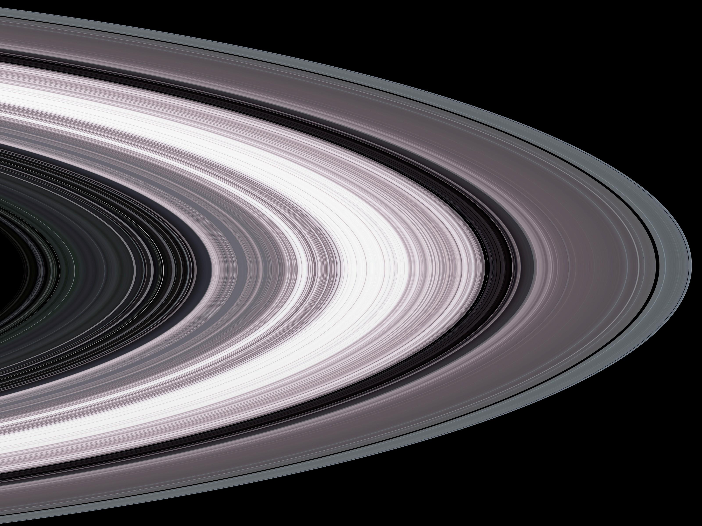
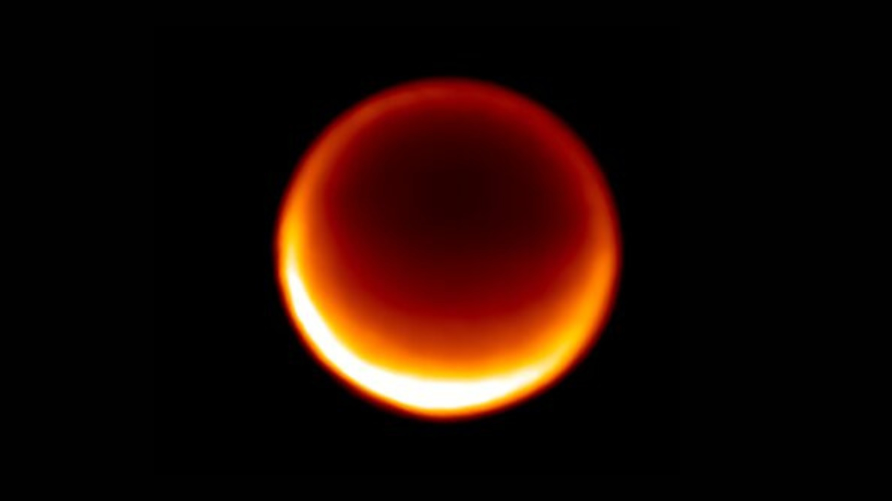
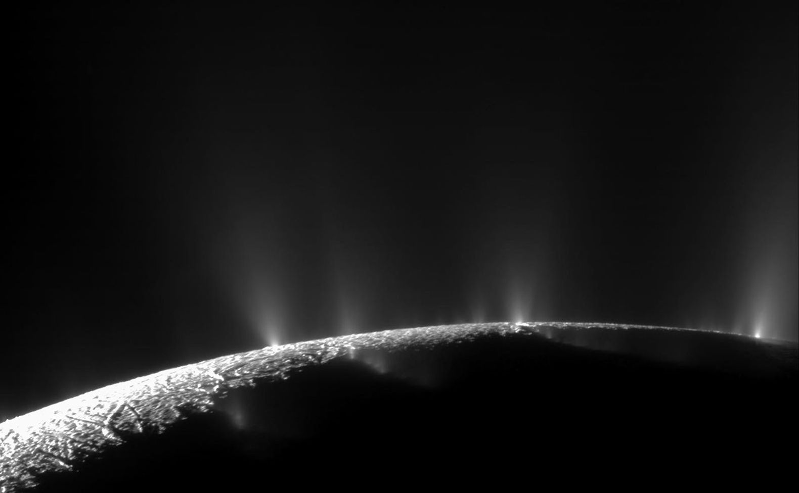

• Type : Planète gazeuse (géante)
• Diamètre : 116 460 km (environ 9 fois celui de la Terre)
• Distance du Soleil : 1,4 milliard de km (9,5 unités astronomiques)
• Durée d'un jour : 10 heures et 33 minutes
• Durée d'une année : 29,5 années terrestres
• Nombre de satellites : 82 lunes confirmées
• Température : -178°C (au sommet des nuages)
• Atmosphère : Principalement hydrogène (96%) et hélium (3%), avec traces d'ammoniac, méthane et vapeur d'eau
Saturne est la sixième planète du système solaire et la deuxième plus grande après Jupiter. Son nom vient du dieu romain de l'agriculture. Ce qui distingue immédiatement Saturne des autres planètes est son spectaculaire système d'anneaux, visible même avec un petit télescope depuis la Terre. Ces anneaux font de Saturne l'un des objets les plus beaux et reconnaissables de notre système solaire.
Comme Jupiter, Saturne est une géante gazeuse composée principalement d'hydrogène et d'hélium. Elle est si peu dense qu'elle pourrait flotter dans une baignoire suffisamment grande (sa densité moyenne est inférieure à celle de l'eau).
Le système d'anneaux de Saturne s'étend jusqu'à 282 000 km du centre de la planète, mais leur épaisseur n'est que d'environ 10 mètres. Ces anneaux sont composés de milliards de particules de glace et de roche, allant de la taille d'un grain de poussière à celle d'une maison. Ils sont organisés en sept anneaux principaux, nommés de A à G dans l'ordre de leur découverte, avec de nombreuses divisions et sous-structures.
La plus célèbre division dans les anneaux est la division de Cassini, une bande sombre de 4 800 km de large séparant les anneaux A et B. L'origine des anneaux reste débattue : ils pourraient être les restes d'une lune détruite par les forces de marée de Saturne, ou des matériaux qui n'ont jamais pu former une lune en raison de la proximité de la planète.
Les anneaux ne sont pas permanents - les scientifiques estiment qu'ils pourraient disparaître dans 100 à 300 millions d'années, car la gravité de Saturne attire progressivement les particules vers la planète.
Saturne possède un système complexe de 82 lunes confirmées, chacune avec ses propres caractéristiques fascinantes. Parmi les plus notables :
• Titan, la plus grande lune de Saturne et la deuxième plus grande du système solaire, est le seul satellite naturel connu à posséder une atmosphère dense. Sa surface est cachée sous des nuages d'hydrocarbures, mais les missions spatiales ont révélé des lacs et des mers de méthane et d'éthane liquides.
• Encelade est une petite lune glacée qui présente une activité géologique surprenante. Des geysers à son pôle sud éjectent de l'eau dans l'espace, suggérant la présence d'un océan souterrain qui pourrait potentiellement abriter la vie.
• Mimas, avec son énorme cratère Herschel, ressemble étrangement à l'Étoile de la Mort de Star Wars.
D'autres lunes notables incluent Téthys, Dioné, Rhéa et Japet, chacune présentant des caractéristiques géologiques uniques.
Saturne est connue depuis l'Antiquité, mais ses anneaux n'ont été observés qu'en 1610 par Galilée, bien qu'il ne les ait pas identifiés comme tels. C'est Christian Huygens qui, en 1655, a correctement interprété ces structures comme des anneaux.
L'exploration spatiale de Saturne a commencé avec les survols de Pioneer 11 en 1979, suivis par Voyager 1 et 2 au début des années 1980. La mission la plus complète a été Cassini-Huygens (1997-2017), qui a passé 13 ans à orbiter autour de Saturne, envoyant des milliers d'images et de données scientifiques. La sonde Huygens, transportée par Cassini, a atterri sur Titan en 2005, devenant le premier atterrisseur sur une lune du système solaire externe.
La mission Cassini s'est terminée de façon spectaculaire en septembre 2017, lorsque la sonde a plongé délibérément dans l'atmosphère de Saturne pour éviter toute contamination potentielle des lunes qui pourraient abriter la vie.

Vue détaillée des anneaux de Saturne par la sonde Cassini, montrant leurs structures complexes

Titan, la plus grande lune de Saturne, avec son atmosphère dense de couleur orange

Les geysers d'eau éjectés du pôle sud d'Encelade, photographiés par Cassini
Chez Cosmos Explorer, nous proposons plusieurs façons de découvrir et d'explorer la planète Saturne et son système :
• Observation astronomique : Nos télescopes de haute qualité vous permettent d'observer Saturne et ses magnifiques anneaux, un spectacle inoubliable même pour les débutants.
• Exploration virtuelle : Notre simulateur de réalité virtuelle vous permet de "voler" à travers les anneaux de Saturne et d'explorer ses lunes fascinantes comme Titan et Encelade.
• Exposition "Les Joyaux de Saturne" : Découvrez notre exposition permanente dédiée à Saturne, avec une maquette détaillée du système d'anneaux et des présentations interactives sur ses lunes.
• Atelier "Construisez votre Saturne" : Une activité ludique et éducative où petits et grands peuvent créer leur propre modèle de Saturne et ses anneaux.
Pour plus d'informations sur nos programmes d'exploration de Saturne, consultez notre page d'exploration ou contactez-nous.